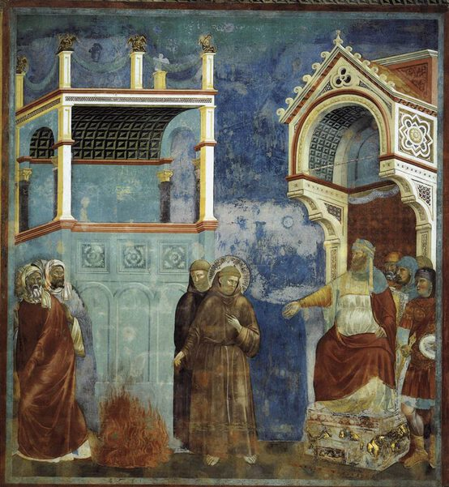

Giotto di Bondone,1266 - 1337,Proto Renaissance,Italian,"Giotto di Bondone (Italian pronunciation: [ˈdʒɔtto di bonˈdoːne]; c. 1267 – January 8, 1337), known mononymously as Giotto (English: ) and Latinised as Giottus, was an Italian painter and architect from Florence during the Late Middle Ages. He worked during the Gothic/Proto-Renaissance period.Giotto's contemporary, the banker and chronicler Giovanni Villani, wrote that Giotto was ""the most sovereign master of painting in his time, who drew all his figures and their postures according to nature"" and of his publicly recognized ""talent and excellence"".In his Lives of the Most Excellent Painters, Sculptors, and Architects, Giorgio Vasari described Giotto as making a decisive break with the prevalent Byzantine style and as initiating ""the great art of painting as we know it today, introducing the technique of drawing accurately from life, which had been neglected for more than two hundred years"".Giotto's masterwork is the decoration of the Scrovegni Chapel, in Padua, also known as the Arena Chapel, which was completed around 1305. The fresco cycle depicts the Life of the Virgin and the Life of Christ. It is regarded as one of the supreme masterpieces of the Early Renaissance.That Giotto painted the Arena Chapel and that he was chosen by the Commune of Florence in 1334 to design the new campanile (bell tower) of the Florence Cathedral are among the few certainties about his life. Almost every other aspect of it is subject to controversy: his birth date, his birthplace, his appearance, his apprenticeship, the order in which he created his works, whether or not he painted the famous frescoes in the Upper Basilica of Saint Francis in Assisi and his burial place.",http://en.wikipedia.org/wiki/Giotto_di_Bondone,119
